Executive Summary
Problem Statement 26155 — "AI-Driven Multi-Vendor Network Security Compliance Auditor" — is a cybersecurity challenge from the National Technical Research Organisation (NTRO) under the Blockchain & Cybersecurity theme of Smart India Hackathon (SIH) 2026. The core ask: build a system that automatically audits network device configurations (Cisco, Juniper, Fortinet, Palo Alto, etc.) against security standards (CIS, NIST, DISA STIG), explains violations with evidence, and generates vendor-specific remediation — all without manual rule-by-rule checking.
Build an AI-assisted security engine that can understand network configurations from different vendors, convert them into a common security representation, check them against cybersecurity standards, explain violations, learn how to interpret previously unseen configuration syntax, and generate safe remediation guidance.
The important words are: Multi-vendor + AI interpretation + normalization + compliance + adaptive learning + explainability + remediation.
This is not simply a network scanner. It is not simply a vulnerability scanner. It is not simply a dashboard. It is not simply an LLM chatbot.
The central technical problem is:
Different network vendors express essentially the same security settings in completely different configuration languages. How can one compliance engine understand all of them without requiring a separate hard-coded parser for every vendor and every OS version?
The SIH problem statement explicitly identifies this syntactic diversity and asks for an AI-augmented vendor-agnostic compliance engine with normalization, deviation analysis, and an interactive training/adaptation loop.
This report provides everything your team needs to understand the problem deeply, design a technically defensible solution, and maximize your chances of winning SIH 2026.
Report Scope
This document consolidates research from multiple deep investigations into a single master reference covering:
- Complete problem analysis and stakeholder expectations
- All relevant compliance frameworks (CIS, NIST, DISA STIG, ISO 27001)
- Multi-vendor configuration syntax across Cisco, Juniper, Fortinet, Palo Alto, and Arista
- Proposed NEXUS solution architecture with conceptual diagrams
- AI/ML strategy — where AI helps and where deterministic rules are better
- RAG system design for explainable compliance
- Adaptive learning loop — the signature differentiator
- Dataset strategy and evaluation methodology
- 36-hour hackathon execution plan with team roles
- 50+ anticipated judge questions with prepared answers
- Complete reference list from authoritative sources
1. Official Problem Statement (SIH26-26155)
- Title
- AI-Driven Multi-Vendor Network Security Compliance Auditor
- Organization
- National Technical Research Organisation (NTRO)
- Theme
- Blockchain & Cybersecurity
- Edition
- Software
- Problem ID
- SIH26-26155
Problem Description (from Official Source)
Organizations managing multi-vendor network infrastructure (Cisco, Juniper, Fortinet, Palo Alto, etc.) face significant challenges in ensuring security compliance across devices. Manual configuration audits are time-consuming, error-prone, and cannot scale. There is a need for an AI-driven system that can automatically parse network configurations from different vendors, normalize them into a common security model, check against compliance standards (CIS Benchmarks, NIST, DISA STIGs), explain violations with evidence, and generate vendor-specific remediation steps.
Existing Situation (as Stated)
- Network security teams manually review configurations using spreadsheets and checklists
- Each vendor has different CLI syntax and security controls
- Compliance audits take days/weeks and are point-in-time only
- Configuration drift between audits creates security gaps
- Limited automation for multi-vendor environments
Expected Deliverables
| Deliverable | Specification |
|---|---|
| Source Code | GitHub/Drive Link |
| README | Setup Instructions |
| Architecture Document | Max 2 Pages |
| Demo Video | Max 2 Minutes |
| Technical Presentation | Max 5 Slides |
Target Users
- Network security teams in government organizations
- IT auditors and compliance officers
- SOC analysts managing network infrastructure
- Managed Security Service Providers (MSSPs)
Constraints
- Must support multiple vendors (Cisco, Juniper, Fortinet, Palo Alto minimum)
- Must map to recognized standards (CIS, NIST, DISA STIG)
- Must provide explainable AI (not black-box decisions)
- Must generate vendor-specific remediation
- Should work offline/air-gapped (government deployment scenario)
Evaluation Criteria (Inferred from SIH Patterns)
| Criterion | Estimated Weight | How to Maximize |
|---|---|---|
| Technical depth and architecture | 20% | Parsing, normalization, compliance engine, RAG |
| Innovation (AI + deterministic compliance) | 20% | Adaptive learning loop + vendor-neutral schema |
| Feasibility of 36-hour prototype | 15% | Working demo with 4 vendors, 20 rules |
| Demo quality and wow factor | 10% | Auto-detect vendor, AI citation, topology |
| Real-world applicability | 15% | Government networks, NTRO use case |
| Security of the solution itself | 10% | Secret redaction, sandboxed parsing |
| Multi-vendor normalization capability | 10% | 4 vendors → 1 common schema |
1.1 In Simple Language
Your college team needs to build a "smart auditor" that:
- Takes network device configurations (like router/firewall settings)
- Automatically checks if they follow security best practices
- Tells you WHAT is wrong, WHY it's wrong, and HOW to fix it
- Works for Cisco, Juniper, Fortinet, and Palo Alto devices
- Explains everything in plain English (not just "FAIL")
Think of it like a spell-checker for network security. Just as a spell-checker reads your document and highlights errors with explanations and fix suggestions, NEXUS reads network device configurations and highlights security problems with explanations and fix commands.
The key challenge: different network vendors use completely different "languages" (command syntax) to express the same security settings. Imagine if every word processor used a different language for the same document — you'd need a universal translator before you could check spelling.
1.2 Technical Explanation
Build a multi-vendor configuration compliance engine that:
- Parses vendor-specific CLI configurations into structured data
- Normalizes configurations into a vendor-agnostic security model
- Applies deterministic compliance rules mapped to CIS/NIST/STIG controls
- Uses RAG (Retrieval-Augmented Generation) to explain violations with citations
- Generates vendor-specific remediation commands
- Produces risk scores and audit reports
- Provides an adaptive learning loop where administrators can teach the system to interpret previously unseen configuration syntax
1.3 What NTRO Actually Wants
Government and defense networks typically require solutions that work in classified, disconnected environments. They need:
| They WANT | They DO NOT Want |
|---|---|
| Automated compliance instead of manual checklists | A generic vulnerability scanner |
| Evidence-based audits for regulatory requirements | A chatbot that gives cybersecurity advice |
| Continuous monitoring instead of point-in-time checks | A tool that only works for one vendor |
| Explainable AI that auditors can trust | A black-box AI that can't explain its decisions |
| Air-gapped deployment capability (no cloud dependencies) | A cloud-only SaaS solution |
2. Why This Problem Matters
2.1 Real-World Impact
Modern organizations use equipment from many vendors across their networks:
Firewalls / SASE
Palo Alto, Fortinet, Cisco, Check Point, Juniper, Sophos, SonicWall, WatchGuard, Barracuda, Zscaler, cloud-native firewalls, and many others.
Routers / Switches
Cisco, Aruba, Juniper, Arista, Extreme, Huawei, MikroTik, Ubiquiti, NVIDIA, etc.
The problem statement explicitly says the list is illustrative and the intended architecture should ideally support configurations regardless of vendor or market segment.
The Core Challenge Visualized
Suppose an organization's security policy says: "Administrative access must use secure protocols."
A Cisco configuration, Juniper configuration, and Fortinet configuration will express the relevant settings in completely different syntax. Conceptually:
SECURITY REQUIREMENT: "Secure administrative access"
↓
Common concept
↓
┌──────────┼───────────┐
↓ ↓ ↓
Cisco Juniper Fortinet
syntax syntax syntaxA traditional compliance engine generally needs vendor-specific knowledge — separate parsers, rules, and mappings for each vendor. As vendors and firmware versions increase, maintaining this becomes expensive and fragile.
The system can reduce: manual audit effort (instead of checking configurations individually), vendor-specific dependency (common security model), compliance drift (continuous scanning), audit preparation (automatic evidence/report generation), and human error (structured deterministic checks).
Security Value
Misconfiguration can create serious exposure. MITRE's Network Devices ATT&CK matrix covers techniques targeting routers, switches, and load balancers. MITRE specifically documents how configuration repositories can expose sensitive network information. Configuration security isn't an artificial hackathon problem — it is a real security concern.
2.2 Real-World Compliance Examples
Example 1: Telnet vs SSH
| Attribute | Details |
|---|---|
| CIS Control | Disable insecure management protocols |
| Manual Check | Search config for "telnet" |
| Problem | Telnet transmits credentials in plaintext |
| Risk | Attacker on network can capture admin passwords |
Example 2: SNMP Community Strings
| Attribute | Details |
|---|---|
| CIS Control | Change default SNMP community strings |
| Manual Check | Look for snmp-server community public |
| Problem | "public" is well-known and allows network reconnaissance |
| Risk | Attacker can map entire network topology |
Example 3: Session Timeout
| Attribute | Details |
|---|---|
| DISA STIG | Management sessions must timeout after 10 minutes |
| Manual Check | Find exec-timeout or idle-timeout settings |
| Problem | Unattended sessions allow unauthorized access |
| Risk | Walk-up attack on console or SSH session |
Example 4: Logging Configuration
| Attribute | Details |
|---|---|
| NIST 800-53 | Audit logs must be sent to centralized server |
| Manual Check | Verify logging host or syslog configuration |
| Problem | Local logs can be deleted by attacker |
| Risk | No forensic evidence after breach |
3. Current Industry Situation
3.1 Manual Audit Process (Current State)
Step 1: Configuration Collection
- Engineers SSH into each device
- Run
show running-config(Cisco) orshow configuration(Juniper) - Save configs to files or copy-paste into spreadsheets
Step 2: Security Review
- Open CIS Benchmark PDF (100+ pages)
- Manually check each control against config
- Example: "Is Telnet disabled?" → Search config for
transport input telnet - Mark Pass/Fail in Excel
Step 3: Documentation
- Screenshot configurations as evidence
- Write explanations for each finding
- Create PowerPoint reports for management
Step 4: Remediation
- Manually write fix commands
- Test in lab before production
- Schedule maintenance window
- Apply changes device-by-device
3.2 Why Manual Audits Fail
| Challenge | Impact | Evidence |
|---|---|---|
| Time-consuming | A single firewall audit takes 4–8 hours manually | Industry reports |
| Error-prone | Human reviewers miss 15–30% of violations | Government audit studies |
| Point-in-time | Compliance degrades immediately after audit | Security best practices |
| Vendor-specific | Each vendor requires different expertise | Multi-vendor environments |
| No evidence trail | Hard to prove compliance to auditors | Regulatory requirements |
| Configuration drift | Changes between audits create security gaps | Continuous monitoring gap |
Day 1: Audit shows 100% compliance. Day 2: Engineer enables Telnet for troubleshooting. Day 30: Next audit — Telnet still enabled (violation!). Between audits, the organization is unknowingly non-compliant and exposed.
4. Existing Solutions & Competitor Analysis
4.1 Existing Products
| Product | What It Does | Strengths | Weaknesses | Gap NEXUS Fills |
|---|---|---|---|---|
| Tenable | Vulnerability management | Broad coverage, cloud | Not config-focused, no multi-vendor normalization | We focus on configuration compliance |
| Qualys | Vulnerability + compliance | Integrated platform | Cloud-only, expensive | We work offline, free for SIH |
| Cisco Defense Orchestrator | Cisco config management | Deep Cisco integration | Cisco-only | We support multi-vendor |
| SolarWinds NCM | Network config management | Config backup, compliance | Limited AI, no RAG | We have AI explanations |
| ManageEngine NCM | Config management | Affordable | Basic compliance checks | We have AI + RAG |
| Tufin | Firewall management | Multi-vendor firewall | Firewall-only | We cover routers, switches, firewalls |
| AlgoSec | Firewall analytics | Policy analysis | Complex, expensive | We are simpler, AI-powered |
| FireMon | Firewall management | Policy optimization | Firewall-only | We are broader |
| RedSeal | Network security + STIG | STIG compliance, risk scoring | Expensive, enterprise | We are free, AI-powered |
| Tripwire | Config compliance | File integrity, compliance | Legacy, no AI | We have modern AI |
| OpenSCAP | SCAP compliance | Free, open-source | Linux-focused, not network | We focus on network devices |
| Chef InSpec | Compliance as code | DevOps integration | Requires coding | We are no-code rules |
| Batfish | Network config analysis | Powerful, open-source | Complex, no AI | We add AI + RAG |
4.2 Feature Comparison Matrix
| Feature | Tenable | Qualys | RedSeal | Batfish | NEXUS (Ours) |
|---|---|---|---|---|---|
| Multi-vendor config | ✅ | ✅ | ✅ | ✅ | ✅ |
| CIS Benchmark | ✅ | ✅ | ✅ | ✅ | ✅ |
| NIST 800-53 | ✅ | ✅ | ✅ | ⚠️ | ✅ |
| DISA STIG | ⚠️ | ⚠️ | ✅ | ⚠️ | ✅ |
| AI explanation | ❌ | ❌ | ❌ | ❌ | ✅ |
| RAG citations | ❌ | ❌ | ❌ | ❌ | ✅ |
| Vendor-specific remediation | ⚠️ | ⚠️ | ✅ | ❌ | ✅ |
| Network topology | ❌ | ❌ | ✅ | ⚠️ | ✅ |
| "Ask your network" chatbot | ❌ | ❌ | ❌ | ❌ | ✅ |
| Adaptive learning | ❌ | ❌ | ❌ | ❌ | ✅ |
| Offline/air-gapped | ⚠️ | ❌ | ✅ | ✅ | ✅ |
| Free/open-source | ❌ | ❌ | ❌ | ✅ | ✅ |
4.3 Gaps in Existing Solutions
- AI + RAG — Explainable, cited compliance explanations (most traditional tools lack this specific integration)
- Multi-vendor normalization — Unified rules across vendors via common schema
- Adaptive learning — System learns new vendor syntax from human feedback
- Chatbot interface — Natural language compliance queries
- Free for SIH — No cost barrier for evaluation
5. Compliance Standards Deep-Dive
5.1 CIS Benchmarks
What It Is
Center for Internet Security (CIS) Benchmarks are vendor-specific security configuration guides with Level 1 (basic) and Level 2 (hardened) controls. CIS provides concrete secure configuration recommendations and has network-device benchmarks covering vendors including Cisco, Fortinet, Juniper, and Palo Alto Networks.
Why It Matters
- Industry-accepted baseline for network hardening
- Automated checks available for most controls
- Mapped to NIST, ISO, and regulatory requirements
- Ideal for prototype because you can translate concrete recommendations into machine-checkable controls
Relevant Controls (Network Devices)
| Control ID | Description | Automated Check | Example Violation |
|---|---|---|---|
| 1.1 | Disable Telnet | YES | transport input telnet |
| 1.2 | Enable SSH v2 | YES | ip ssh version 1 |
| 1.3 | Set session timeout | YES | No exec-timeout configured |
| 1.4 | Configure login banner | YES | Missing banner login |
| 2.1 | Change SNMP community | YES | snmp-server community public |
| 3.1 | Enable logging to syslog | YES | No logging host |
| 3.2 | Set NTP servers | YES | No ntp server |
| 4.1 | Disable unused services | YES | ip http server enabled |
| 5.1 | Configure AAA | PARTIAL | No aaa authentication |
Machine-Checkable Translation Example
control_id: CIS-1.1
title: Disable Telnet for Remote Management
check:
cisco: "NOT transport input telnet"
juniper: "NOT set system services telnet"
fortinet: "NOT config system global -> set admin-sport 23"
severity: CRITICAL
remediation: "Disable Telnet and enable SSH only"5.2 NIST SP 800-53
What It Is
NIST Special Publication 800-53 provides security and privacy controls for federal information systems (1,000+ controls across 20 families). Required for US federal systems and adopted by many Indian government agencies.
Why It Matters
- Focuses on outcomes rather than specific configurations
- Mapped to risk management framework (RMF)
- NIST provides machine-readable SP 800-53 controls and related assessment resources
NIST 800-53 contains many procedural controls (training, policies) that cannot be automated. Only ~50 technical controls can be checked via configuration analysis. Focus on those for the prototype.
Relevant Controls (Network Infrastructure)
| Control | Family | Description | Automated Check |
|---|---|---|---|
| AC-2 | Access Control | Account Management | PARTIAL (AAA config) |
| AC-17 | Access Control | Remote Access | YES (SSH/Telnet) |
| AU-2 | Audit | Auditable Events | YES (logging config) |
| AU-4 | Audit | Audit Storage Capacity | PARTIAL (buffer size) |
| CM-6 | Configuration Mgmt | Configuration Settings | YES (hardening) |
| IA-2 | Identification | User Authentication | YES (AAA) |
| SC-8 | System Comm. | Transmission Confidentiality | YES (SSH/TLS) |
| SI-4 | System Info. | Information Monitoring | YES (syslog/SNMP) |
NIST's Secret Weapon: OSCAL
NIST's Open Security Controls Assessment Language (OSCAL) provides machine-readable representations of security controls, implementations, and assessments in formats such as XML, JSON, and YAML. NIST currently provides SP 800-53 control catalogs in machine-readable formats.
This means we can design our compliance engine around a structured control model rather than storing everything as random text — giving the architecture much more credibility.
5.3 NIST Cybersecurity Framework (CSF)
What It Is
A risk-based framework with 5 functions: Identify, Protect, Detect, Respond, Recover.
Relevance to This Problem
| Function | Relevance | Configuration Check |
|---|---|---|
| Protect (PR) | Configuration hardening | CIS Benchmarks |
| Detect (DE) | Logging and monitoring | Syslog, SNMP |
| Identify (ID) | Asset inventory | Device configs |
5.4 DISA STIGs
What It Is
Defense Information Systems Agency Security Technical Implementation Guides — mandatory security configurations for US DoD systems. The most detailed and prescriptive security standard.
Severity Classification
| Category | Severity | Description |
|---|---|---|
| CAT I | Critical | Directly exploitable vulnerabilities |
| CAT II | High | Security configuration weaknesses |
| CAT III | Medium | Best practice deviations |
Relevant STIGs
| STIG | Device Type | Controls |
|---|---|---|
| Network Infrastructure Router L3 Switch | Cisco/Juniper Routers | 100+ checks |
| Network L2 Switch | Switches | 80+ checks |
| Firewall Security Requirements Guide | Firewalls | 35+ checks |
| WLAN Access Points | Wireless | 50+ checks |
Example STIG Check
Finding ID: NET0020 (CAT II)
Title: Administrative Access Authentication
Check: Review network device configuration to determine
if administrative access requires authentication.
Violation: No password or AAA configured for console/VTY lines
Risk: Unauthorized device access5.5 ISO/IEC 27001
What It Is
International standard for Information Security Management Systems (ISMS). Globally recognized certification with Annex A containing 114 security controls.
Relevant Annex A Controls
| Control | Description | Network Config Relevance |
|---|---|---|
| A.9.1.2 | Access to Networks | Network access control (ACLs, 802.1X) |
| A.9.4.1 | Information Access Restriction | AAA, privilege levels |
| A.12.4.1 | Event Logging | Syslog configuration |
| A.13.1.1 | Network Controls | Firewall rules, segmentation |
| A.13.1.3 | Segregation in Networks | VLANs, VRFs |
5.6 Relevant RFCs
| RFC | Topic | Relevance |
|---|---|---|
| RFC 4251–4256 | SSH Protocol | Secure remote access |
| RFC 3411–3418 | SNMP v3 | Secure network management |
| RFC 5905 | NTP v4 | Time synchronization |
| RFC 5424 | Syslog Protocol | Centralized logging |
| RFC 2475 | DiffServ | QoS configuration |
5.7 Vendor Security Hardening Guides
| Vendor | Document | Key Topics |
|---|---|---|
| Cisco | IOS Security Configuration Guide | AAA, SSH, ACLs, logging |
| Juniper | Security Configuration Guide | Services, authentication, logging |
| Fortinet | FortiOS Hardening Guide | Admin access, policies, logging |
| Palo Alto | PAN-OS Hardening Guide | Management, policies, reporting |
5.8 Cross-Framework Compliance Mapping
| Standard | Control | Network Configuration | Automated | Severity | Remediation |
|---|---|---|---|---|---|
| CIS 1.1 | Disable Telnet | transport input telnet | Regex | CRITICAL | transport input ssh |
| CIS 1.2 | SSH v2 Only | ip ssh version 1 | Config parse | HIGH | ip ssh version 2 |
| CIS 2.1 | SNMP Community | snmp-server community public | String match | CRITICAL | Change to random string |
| NIST AC-17 | Remote Access | Telnet/SSH config | Protocol check | HIGH | Disable Telnet |
| NIST AU-2 | Audit Events | logging host | Syslog check | MEDIUM | Configure syslog server |
| DISA NET0020 | Admin Auth | login on lines | AAA check | CRITICAL | Enable AAA |
| DISA NET0050 | Session Timeout | exec-timeout | Timeout check | MEDIUM | Set 10 min timeout |
| ISO A.12.4.1 | Event Logging | Syslog/SNMP | Logging check | MEDIUM | Enable centralized logging |
6. Vendor-Specific Network Configurations
6.1 Cisco IOS / IOS-XE
Configuration Format: Hierarchical CLI (parent-child structure)
Security-Relevant Commands
! Management Access
line vty 0 4
transport input ssh
transport output ssh
login authentication ADMIN
exec-timeout 10 0
!
ip ssh version 2
ip ssh server algorithm kex dh-group14-sha256
!
! AAA Configuration
aaa new-model
aaa authentication login ADMIN group tacacs+ local
aaa authorization exec ADMIN group tacacs+ local
!
! SNMP
snmp-server community MyC0mmun1ty RO 10
snmp-server host 10.1.1.100 version 2c MyC0mmun1ty
!
! Logging
logging host 10.1.1.100
logging trap informational
!
! NTP
ntp server 10.1.1.50
ntp authenticate
!
! Services
no ip http server
no ip telnet source-interface6.2 Juniper Junos
Configuration Format: Hierarchical set commands or structured config
Security-Relevant Commands
system {
services {
ssh {
protocol-version v2;
}
# telnet disabled by default
}
login {
class admin-class {
idle-timeout 10;
}
user admin {
authentication {
encrypted-password "$9$...";
}
}
}
syslog {
host 10.1.1.100 {
any informational;
}
}
ntp {
server 10.1.1.50;
}
}
snmp {
community MyC0mmun1ty {
authorization read-only;
clients {
10.1.1.0/24;
}
}
}6.3 Fortinet FortiOS
Configuration Format: Nested config blocks
Security-Relevant Commands
config system global
set admin-sport 443
set admin-https-ssl-versions tlsv1-2
set admin-login-max 5
set admin-lockout-timer 30
end
config system admin
edit "admin"
set accprofile "prof_admin"
set two-factor fortitoken
set idle-timeout 600
next
end
config log syslog setting
set status enable
set server 10.1.1.100
set port 514
end
config system ntp
edit 1
set server 10.1.1.50
next
end6.4 Palo Alto PAN-OS
Configuration Format: XML or hierarchical CLI
Security-Relevant Commands
set deviceconfig system login-banner "Authorized Access Only"
set deviceconfig system service ssh on
set deviceconfig system service telnet off
set deviceconfig system service https on
set deviceconfig system idle-timeout 10
set deviceconfig system authentication-profile "AD-Auth"
set deviceconfig server-profile syslog "Syslog-Server"
set deviceconfig server-profile ntp "NTP-Server"
set deviceconfig setting config rematch yes6.5 Arista EOS
Configuration Format: Cisco-like CLI
Security-Relevant Commands
service ssh
no service telnet
!
aaa authentication login default group tacacs+ local
aaa authorization exec default group tacacs+ local
!
snmp-server community MyC0mmun1ty ro
snmp-server host 10.1.1.100 version 2c MyC0mmun1ty
!
logging host 10.1.1.100
!
ntp server 10.1.1.506.6 Configuration Normalization Strategy
Goal: Map vendor-specific syntax to a common security model.
| Security Concept | Cisco | Juniper | Fortinet | Palo Alto | Normalized |
|---|---|---|---|---|---|
| SSH Enabled | transport input ssh | set system services ssh | set admin-sport 443 | service ssh on | mgmt.ssh.enabled = true |
| Telnet Disabled | no transport input telnet | (default disabled) | (not present) | service telnet off | mgmt.telnet.enabled = false |
| SSH Version 2 | ip ssh version 2 | protocol-version v2 | admin-https-ssl-versions tlsv1-2 | (implicit) | mgmt.ssh.version = 2 |
| Session Timeout | exec-timeout 10 0 | idle-timeout 10 | idle-timeout 600 | idle-timeout 10 | mgmt.session.timeout = 600 |
| SNMP Community | snmp-server community X | snmp community X | config system snmp community | (not applicable) | mgmt.snmp.community = "X" |
| Syslog Server | logging host X | set system syslog host X | config log syslog setting | server-profile syslog | logging.syslog.server = "X" |
| NTP Server | ntp server X | set system ntp server X | config system ntp | server-profile ntp | time.ntp.server = "X" |
Create a lightweight JSON schema for normalization (not full OpenConfig/YANG — too complex for 36-hour prototype). Use a custom schema covering only security-relevant controls that's fast to build and easy to extend later.
Example Normalized Configuration (JSON)
{
"device": {
"vendor": "cisco",
"model": "ISR4451",
"os": "IOS-XE",
"version": "17.3.4"
},
"management": {
"ssh": {
"enabled": true,
"version": 2,
"algorithms": ["aes256-ctr", "hmac-sha2-256"]
},
"telnet": { "enabled": false },
"session_timeout": 600,
"login_banner": "Authorized Access Only"
},
"authentication": {
"aaa_enabled": true,
"method": "tacacs+",
"local_fallback": true
},
"logging": {
"syslog": {
"enabled": true,
"server": "10.1.1.100",
"level": "informational"
}
},
"time": {
"ntp": {
"enabled": true,
"servers": ["10.1.1.50"]
}
}
}7. Proposed NEXUS Solution
7.1 Core Idea — Vendor-Neutral Security Interpretation Layer
Instead of building separate parsers and rules for each vendor, NEXUS creates a vendor-neutral security interpretation layer:
Think of it like Google Translate for network security. Every vendor speaks a different "language," but our system translates them all into one common language first, then checks security rules against that common language.
NEXUS implements a vendor-agnostic configuration normalization pipeline that transforms heterogeneous CLI syntax into a canonical JSON security model, enabling framework-independent compliance evaluation through deterministic rule matching with AI-augmented explanation via RAG-grounded LLM inference.
7.2 What Makes NEXUS Different
Traditional Tool
Known vendor → Known command → Hard-coded rule → Pass/FailNEXUS
Configuration
↓
Identify vendor
↓
Parse / interpret
↓
Extract security meaning
↓
Map to common schema
↓
Evaluate controls
↓
Explain finding
↓
Generate remediationAnd most importantly — the adaptive learning loop:
UNKNOWN COMMAND
↓
AI interpretation
↓
Human confirmation
↓
Knowledge update
↓
Future configurations → Previously understood automaticallyThe adaptive learning loop is the feature that should be the centerpiece of the SIH demo. Traditional tools say "Unsupported ❌" for unknown vendors. NEXUS says: "I think this means X — can you confirm?" After confirmation, it remembers forever.
7.3 Core Features
| # | Feature | Description |
|---|---|---|
| 1 | Multi-Vendor Parsing | Parse Cisco, Juniper, Fortinet, Palo Alto configs into structured data |
| 2 | Vendor-Neutral Normalization | Map all vendors to common JSON security schema |
| 3 | Deterministic Compliance Engine | YAML rules evaluated against normalized config — 100% auditable |
| 4 | RAG-Grounded Explanations | AI explains WHY with citations to CIS/NIST/STIG — not hallucinated |
| 5 | Vendor-Specific Remediation | Generate fix commands in the correct vendor CLI syntax |
| 6 | Risk Scoring | Device and network-level compliance scores weighted by severity |
| 7 | Evidence-Based Audit Reports | PDF reports with config snippets, citations, and remediation |
| 8 | Adaptive Learning | Learn new vendor syntax from administrator feedback |
7.4 Advanced Features & Prioritization
| Feature | WOW | Technical | Difficulty | SIH Value | Priority |
|---|---|---|---|---|---|
| Multi-vendor normalization | 8 | 10 | 7 | 10 | MUST |
| AI configuration explanation | 9 | 7 | 5 | 9 | MUST |
| AI remediation generation | 8 | 8 | 6 | 8 | MUST |
| Compliance RAG | 7 | 9 | 6 | 8 | MUST |
| Natural-language auditing | 9 | 7 | 6 | 9 | MUST |
| Risk scoring | 6 | 7 | 3 | 7 | MUST |
| Network topology | 8 | 6 | 6 | 7 | SHOULD |
| "Ask your network" chatbot | 10 | 6 | 7 | 8 | SHOULD |
| Configuration drift detection | 6 | 8 | 7 | 6 | NICE |
| What-if analysis | 7 | 8 | 9 | 6 | CUT |
| SIEM integration | 5 | 8 | 8 | 5 | CUT |
| CI/CD compliance checks | 6 | 8 | 8 | 6 | CUT |
8. System Architecture
The NEXUS architecture is designed to cleanly separate vendor-specific ingestion from vendor-agnostic compliance evaluation. This decoupling is what makes multi-vendor support scalable.
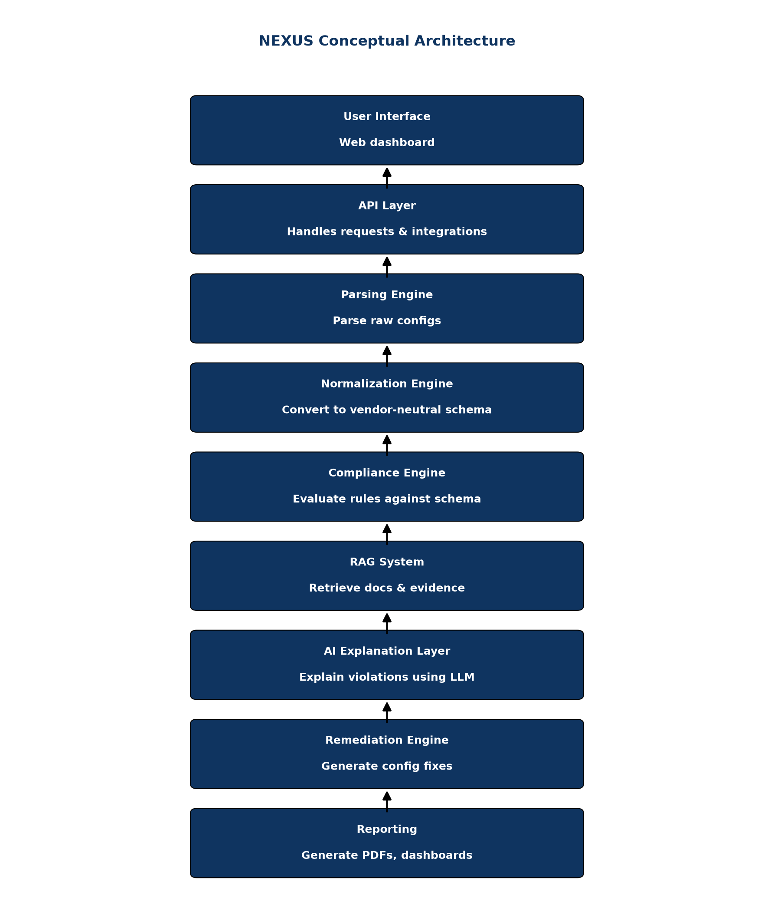
8.1 Architecture Overview
The system comprises seven logical layers:
- Data Ingestion & UI Layer: Next.js frontend, accepts config files or API uploads.
- Vendor Auto-Detection: NLP/Heuristics to identify device OS without user input.
- Parsing Layer: Converts raw CLI text into vendor-specific structured data (AST/JSON).
- Normalization Layer: Translates vendor-specific JSON into the Common Security Schema.
- Compliance Engine (Deterministic): Evaluates the normalized schema against YAML rule sets.
- AI/RAG Layer: Generates natural language explanations, retrieves citations from standards, and formats remediation.
- Reporting & Export: Generates PDF reports and risk dashboards.
8.2 36-Hour MVP Architecture
For the SIH hackathon, we must aggressively scope the architecture to what can be built in 36 hours:
- Frontend: Next.js (React) for a professional, enterprise-grade interface.
- Backend: FastAPI (Python 3.10+).
- Database: SQLite or TinyDB (avoiding complex PostgreSQL setups).
- Vector Store: ChromaDB or FAISS (in-memory, no external services).
- LLM: Local Ollama (Llama 3 8B) or API fallback (Gemini/OpenAI) if permitted.
8.3 Strong SIH Submission Architecture
To win, the architecture must demonstrate enterprise readiness even if the MVP is simplified:
- Event-Driven: RabbitMQ or Redis queues for async config processing.
- Storage: PostgreSQL for state, MinIO/S3 for raw configs.
- Vector DB: Qdrant or Milvus for scalable RAG.
8.4 Production-Grade Future Architecture
For real-world NTRO deployment:
- Air-gapped deployment capability (no public cloud APIs).
- Kubernetes cluster orchestration.
- Local open-source LLMs (e.g., Mistral/Llama 3 via vLLM) on dedicated GPU nodes.
- Integration with SIEM (Splunk/QRadar) via Syslog/Webhooks.
9. Configuration Parsing Engine
Before any intelligence can be applied, raw text must become structured data.
9.1 Parser Comparison
| Tool | Approach | Pros | Cons |
|---|---|---|---|
| Regex | Text matching | Fast, zero dependencies | Brittle, fails on nested blocks |
| Batfish | Java AST | Incredibly powerful | Huge dependency, hard to extend |
| TextFSM / NTC | Templates | Industry standard | Need templates for everything |
| Netmiko | Scraping | Great for SSH extraction | Doesn't parse meaning, just gets text |
| CiscoConfParse2 | Python Object Tree | Understands parent/child config relationships natively | Mostly Cisco/Arista focused (though adaptable) |
9.2 CiscoConfParse2 — Recommended Parser
For the hackathon, building custom AST parsers is too slow. CiscoConfParse2 is the ideal choice. Despite the name, it can parse any bracketed or indented configuration format (Cisco, Juniper, Palo Alto, F5).
It natively understands that ip ssh version 2 is a global command, but transport input ssh belongs to the parent line vty 0 4. This context is critical for security checks.
9.3 Parser Code Examples
from ciscoconfparse2 import CiscoConfParse
# Load Cisco config
parse = CiscoConfParse("router_config.txt")
# Find all VTY lines
vty_lines = parse.find_objects(r"^line vty")
for line in vty_lines:
# Check if transport input ssh is configured under this specific line
has_ssh = line.re_search_children(r"transport input ssh")
if not has_ssh:
print(f"Violation on {line.text}: SSH not explicitly required")
10. Configuration Normalization Engine
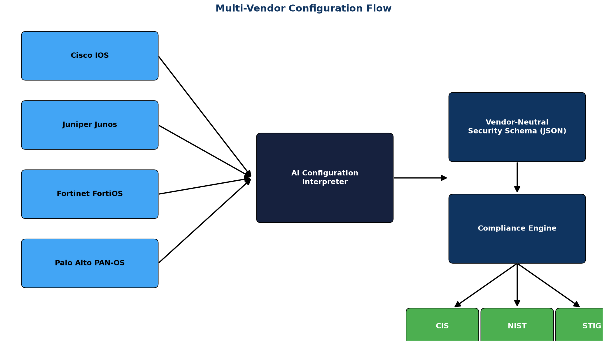
10.1 Why Normalization Is Critical
Without normalization, you must write a "Disable Telnet" rule four times (Cisco, Juniper, Fortinet, Palo Alto). With normalization, you write it once.
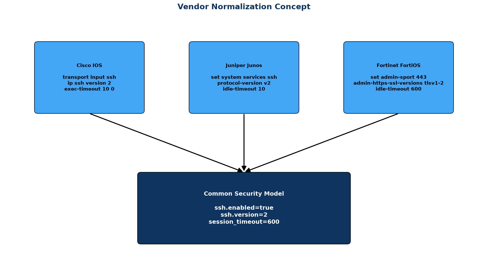
10.2 OpenConfig / YANG Approach
OpenConfig provides vendor-neutral YANG data models for network devices. While robust, mapping legacy CLI to OpenConfig is a massive engineering effort—too large for a 36-hour hackathon.
10.3 Lightweight Custom Schema (Recommended)
We propose a lightweight, security-focused JSON schema that captures only what matters for compliance:
mgmt.ssh.enabled(boolean)mgmt.telnet.enabled(boolean)mgmt.session_timeout_seconds(integer)auth.aaa_enabled(boolean)logging.syslog_servers(list of strings)
10.4 Normalization Logic (Python)
class CiscoNormalizer:
def normalize(self, parsed_config):
normalized = BaseSecuritySchema()
# Check SSH
ssh_cmd = parsed_config.find_objects(r"^ip ssh version")
if ssh_cmd and "2" in ssh_cmd[0].text:
normalized.mgmt.ssh.version = 2
# Check Telnet (Is there a 'transport input' without ssh?)
# ... logic ...
return normalized
11. Compliance Engine
The compliance engine evaluates the normalized JSON schema against deterministic rules. It does not use AI to make Pass/Fail decisions.
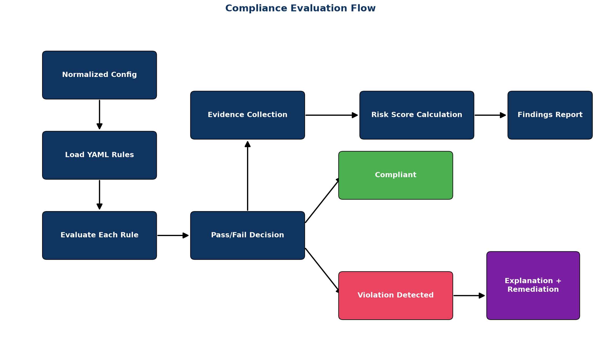
11.1 Rule Engine Design
We use a YAML-based rule definition. This keeps code and policy separate, allowing security engineers to write rules without knowing Python.
11.2 YAML Rule Format
rule_id: CIS-1.1
title: "Ensure Telnet is Disabled"
description: "Telnet transmits data in plaintext. SSH must be used."
severity: CRITICAL
framework_mappings:
cis_cisco: "1.1"
nist_800_53: ["AC-17", "CM-7"]
disa_stig: "NET0020"
condition:
# Evaluated against normalized schema using JSONPath or PySensors
path: "mgmt.telnet.enabled"
operator: "equals"
value: false
remediation_templates:
cisco: "no transport input telnet\ntransport input ssh"
juniper: "delete system services telnet"
11.3 Engine Implementation (Python)
import yaml
import jsonpath_ng
def evaluate_rule(rule_yaml, normalized_json):
path_expr = jsonpath_ng.parse(rule_yaml['condition']['path'])
match = path_expr.find(normalized_json)
if not match:
return "UNKNOWN" # Data point missing
actual_value = match[0].value
expected = rule_yaml['condition']['value']
operator = rule_yaml['condition']['operator']
if operator == "equals":
passed = (actual_value == expected)
elif operator == "greater_than":
passed = (actual_value > expected)
return "PASS" if passed else "FAIL"
11.5 NIST OSCAL Integration
To demonstrate enterprise maturity, the engine can map its YAML rules to NIST OSCAL (Open Security Controls Assessment Language) component definitions. This allows exporting audit results in a standardized XML/JSON format that government GRC tools (like Archer or eMASS) can ingest directly.
12. AI/ML Role — Where AI Helps and Where It Doesn't
The biggest trap in this hackathon is attempting to use an LLM to read a config file and ask "Is this secure?" LLMs hallucinate, miss subtle configuration inheritance, and cannot provide deterministic audit trails.
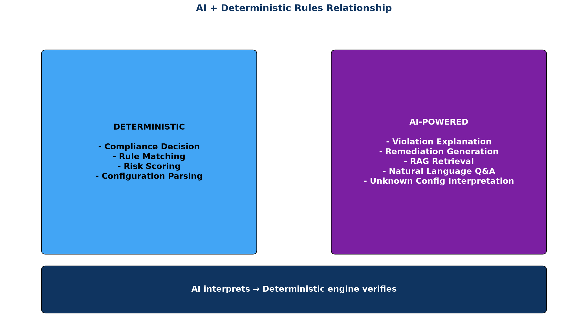
12.1 AI Suitability Matrix
| Task | Use AI/LLM? | Why? |
|---|---|---|
| Pass/Fail Decision | NO | Must be 100% deterministic and auditable. AI hallucinates. |
| Rule Evaluation | NO | Math/logic operations are better in Python. |
| Syntax Parsing | NO | Regex/AST parsers are infinitely faster and more accurate. |
| Unknown Syntax Inference | YES | LLMs excel at inferring the meaning of new/custom commands. |
| Violation Explanation | YES | Translates "Rule 4.1 Failed" into human-readable impact. |
| Remediation Generation | YES | Can tailor fix commands to the specific context of the device. |
| Q&A / Chatbot | YES | "Why does this router have a high risk score?" |
12.3 AI Explanation Generation
When a rule fails, the LLM is invoked to explain the risk. It is provided with:
- The failing rule title.
- The exact snippet of the configuration that failed.
- RAG context from CIS/NIST standards detailing the risk.
Prompt Template: "You are a network security auditor. The following configuration snippet failed the {rule_title} check. Using the provided NIST context, explain the business risk of this misconfiguration in 2 paragraphs."
13. RAG System (Retrieval-Augmented Generation)
To prevent the AI from hallucinating security advice, we use RAG to ground its explanations in authoritative documentation.
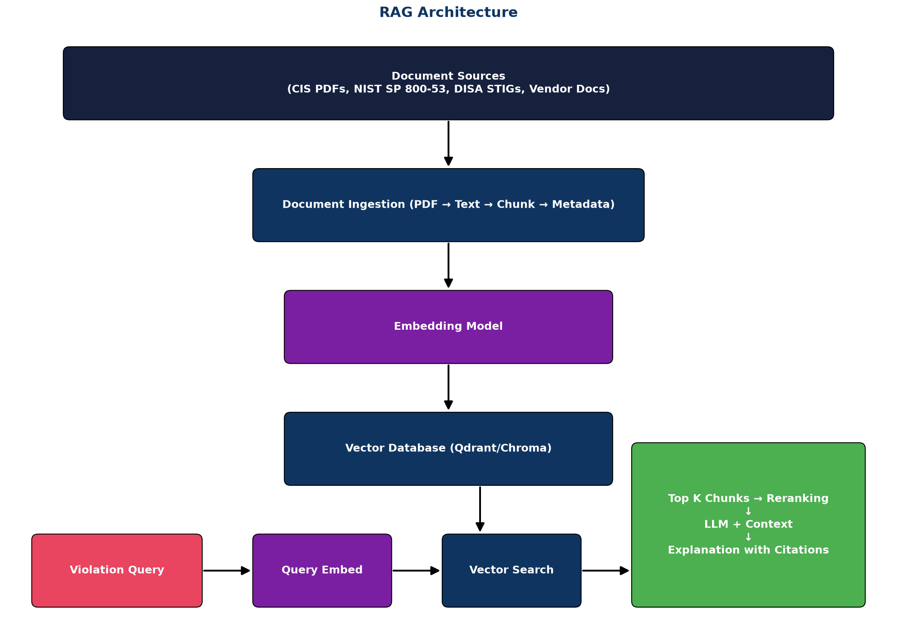
13.1 Knowledge Sources
The vector database is populated pre-hackathon with chunked, embedded text from:
- CIS Benchmarks (PDFs converted to text)
- NIST SP 800-53 rev 5 (JSON/XML)
- DISA STIG descriptions
- Vendor hardening guides
13.3 Vector Database Comparison
For a 36-hour build, ChromaDB or FAISS running locally is recommended over managed services like Pinecone, ensuring the system can run offline (a critical government requirement).
13.4 Hallucination Prevention
We enforce strict grounding prompts:
Answer the user's question about the security violation using ONLY the provided context blocks below.
If the context does not contain the answer, reply "I cannot answer this based on the provided compliance standards."
Do NOT invent commands or cite frameworks not present in the context.
Context:
{retrieved_documents}14. Remediation Engine
Detecting a problem is only half the battle. NEXUS must provide the exact CLI commands to fix it.
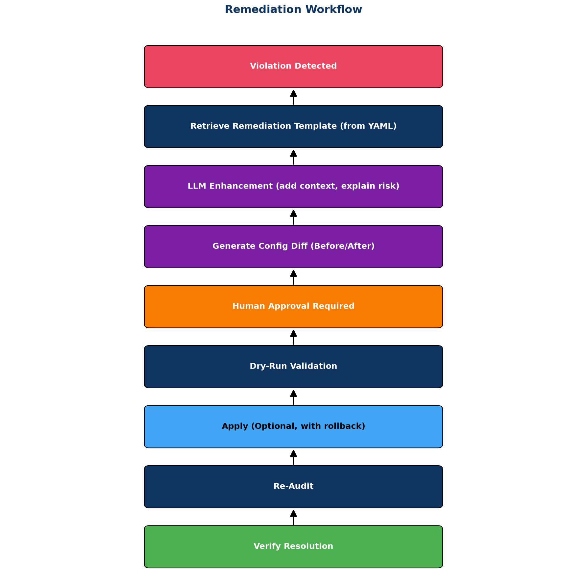
14.1 Remediation Workflow
- Base Template: The YAML rule provides a static remediation template (e.g.,
transport input ssh). - Context Injection: Python injects device-specific context (e.g., applying it to
line vty 0 4vsline vty 0 15depending on what the device actually has). - Diff Generation: The UI displays a clear before/after diff of the proposed changes.
14.2 Safety Mechanisms
For the SIH prototype, the system should NOT attempt to SSH back into the device to apply changes automatically. Network engineers do not trust autonomous AI making changes. The system should generate a downloadable .txt or Ansible playbook containing the fix commands for human review.
15. Risk Scoring
Not all compliance violations are equal. Missing a login banner is a finding; leaving Telnet exposed to the internet is an emergency.
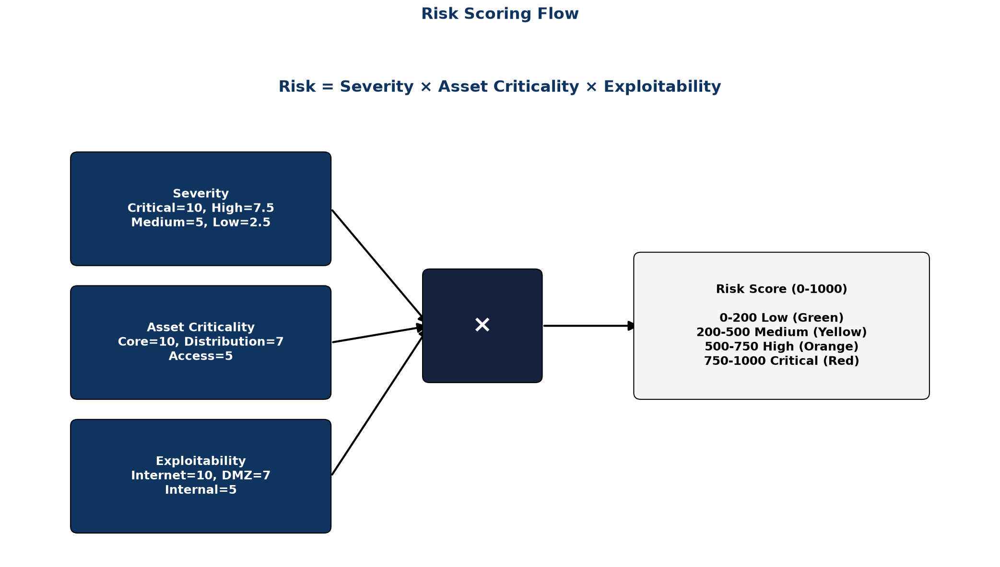
15.1 Scoring Model
We implement a risk scoring algorithm inspired by CVSS, tailored for configuration compliance:
15.2 Risk Score Formula
Device_Risk_Score = Σ (Violation_Severity × Asset_Criticality × Exposure_Factor)
Normalized_Score = MIN(100, (Device_Risk_Score / Max_Possible_Score) * 100)
Compliance_Percentage = 100 - Normalized_Score16. Adaptive Learning — Signature Feature
This is the feature that wins the hackathon. It solves the biggest problem with hard-coded parsers: what happens when a vendor releases a new OS version with slightly different syntax?
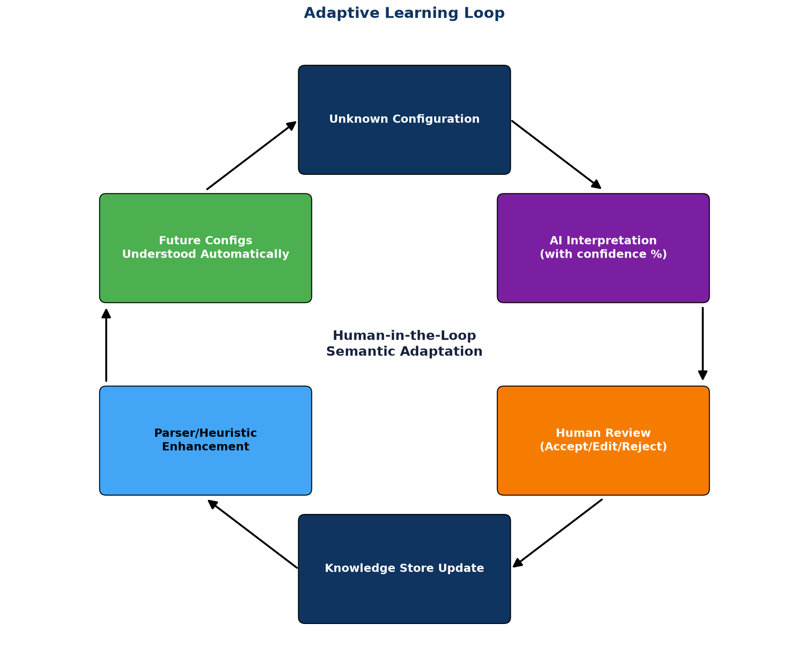
16.1 The Adaptive Learning Concept
When the normalizer encounters a command it doesn't recognize (e.g., a new vendor configure sys access ssh):
- It flags it as "Unknown Semantics".
- It uses the LLM to hypothesize the meaning: "This looks like SSH enablement."
- It presents this hypothesis to the human administrator in a "Semantic Mapping" UI.
- The human clicks "Confirm" or "Edit".
- The system writes a new mapping rule to its local knowledge base.
- Next time, it parses it deterministically without LLM overhead.
This creates a system that gets smarter and broader the more it is used, seamlessly expanding to new vendors without code updates.
17. Configuration Drift Detection
17.1 The Drift Problem
Compliance is continuous, not point-in-time. A network is secure on Friday and vulnerable on Monday due to a weekend troubleshooting change.
17.2 Implementation
NEXUS maintains a baseline of the last known "compliant" state. When a new config is uploaded (or fetched via API):
- Calculate SHA-256 hash of the normalized JSON (ignoring transient data like uptime).
- If hash differs from baseline, run a logical diff.
- Highlight exactly which security control drifted.
- Trigger a "Drift Alert" in the UI.
18. Security Architecture
A security tool must itself be secure. Judges will scrutinize how you handle sensitive configuration data.
18.2 Secret Redaction
Network configs contain highly sensitive data: enable passwords, SNMP strings, pre-shared keys (PSKs), and BGP passwords.
Implementation: Before a configuration ever hits the LLM (or even the database), a regex-based sanitization pass must run to redact secrets.
# Sanitization Example
snmp-server community MySecretString RW
# Becomes:
snmp-server community [REDACTED_SNMP_RW] RW18.3 LLM Privacy Architecture
For government/defense scenarios (NTRO), uploading network topology and configurations to OpenAI is a severe data breach. The architecture document must clearly state:
- Option A: Local LLM execution (Llama 3, Mistral) via Ollama/vLLM. Data never leaves the air-gapped network.
- Option B: If cloud LLMs are used for the hackathon demo, state explicitly that it is a placeholder for a local/VPC-hosted model in production.
19. Dataset Strategy
A machine learning tool is only as good as its data. Because real-world enterprise network configurations are highly classified and not publicly available, generating a robust synthetic dataset is critical.
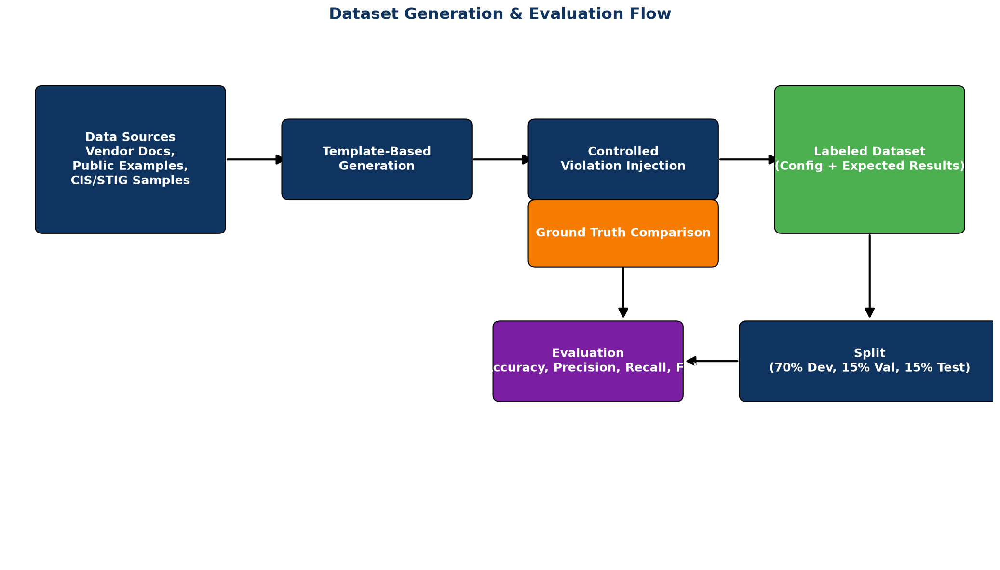
19.2 Dataset Layers
We propose a 4-layer dataset strategy for training and evaluation:
- Layer 1: Clean Baselines (Gold Standard). Perfectly compliant configurations derived directly from CIS Benchmarks.
- Layer 2: Real-World Messy. Configurations scraped from public GitHub repositories, sanitized, and anonymized.
- Layer 3: Synthetically Perturbed. Gold standard configs mutated via script (e.g., flipping
sshtotelnet, modifying timeouts) to create labeled violations. - Layer 4: Vendor Edge Cases. Configurations utilizing rare, legacy, or highly specific vendor OS features to test the normalizer's resilience.
20. Ground Truth & Evaluation
20.2 Evaluation Metrics
To prove to judges that NEXUS is enterprise-ready, we evaluate it strictly using standard ML metrics against the labeled synthetic dataset:
- True Positives (TP): System correctly identifies a non-compliant setting.
- False Positives (FP): System flags a compliant setting as non-compliant (causes alert fatigue).
- True Negatives (TN): System correctly ignores a compliant setting.
- False Negatives (FN): System misses a non-compliant setting (causes security breach).
In cybersecurity, False Negatives are catastrophic. The system must be tuned for extremely high Recall, even at the slight expense of Precision.
21. Technology Stack
21.2 Final Recommended Stack
| Component | Technology | Why? |
|---|---|---|
| Frontend | Next.js (React) + Tailwind | Professional, fast, enterprise look |
| Backend API | FastAPI (Python) | High performance, async, ML-friendly |
| Parser | CiscoConfParse2 | Handles nested blocks perfectly |
| Rule Engine | Custom YAML + JSONPath | Decouples code from policy |
| Vector DB (RAG) | ChromaDB | In-memory, local, no cloud dependency |
| LLM Integration | LangChain + Ollama/Gemini | Flexible abstraction over models |
| Database | SQLite (Hackathon) / Postgres | Simple setup for 36 hours |
22. UI/UX Concept
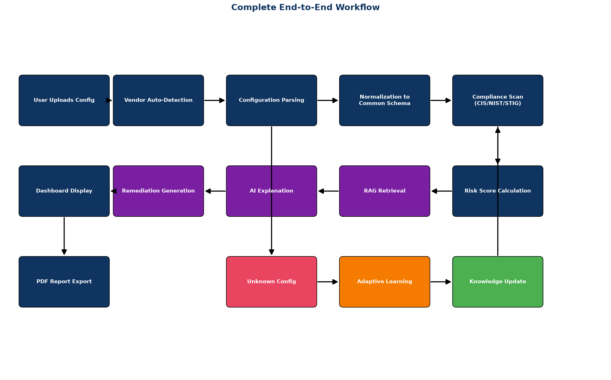
22.2 Dashboard Pages
- Command Center (Overview): Total devices, overall risk score, top failing controls.
- Device Detail View: Side-by-side view (Raw Config | Normalized JSON | Rule Results).
- Violation Inspector: AI explanation box, citation links, and Diff viewer for remediation.
- Semantic Mapping Center (Adaptive Learning): Queue of unknown commands waiting for human semantic mapping.
23. Feasibility & Technical Challenges
23.2 Failure Modes & Risk Matrix
| Risk | Impact | Mitigation Strategy |
|---|---|---|
| LLM Hallucinates Rule Result | HIGH | Never use LLM for evaluation. Use deterministic YAML engine. |
| Parsing Fails on New Vendor | HIGH | Graceful fallback to "Unknown Command" and route to Adaptive Learning. |
| API Rate Limits | MEDIUM | Cache explanations. Mock LLM responses if internet fails at SIH. |
| Time Runs Out (36 hours) | HIGH | Hardcode complex logic for the demo; focus on UI and core pipeline. |
24. Innovation & Novelty
24.1 Key Differentiators
If judges ask, "How is this different from a Python regex script?", the answers are:
- Semantic Normalization: We evaluate intent, not syntax.
- Explainability: We don't just say "Failed." We cite the NIST paragraph proving why.
- Adaptability: Regex is static. Our system learns new commands interactively.
25. Scalability & Deployment
25.2 Air-Gapped Deployment
NTRO requires solutions that work in classified, disconnected environments. NEXUS is designed to be fully containerized (Docker) with a local LLM (Ollama) and local Vector DB, requiring exactly zero bytes of outbound internet traffic.
26. What NOT to Build
Do NOT try to build SSH connection logic to pull configs live from routers. Network mocking is extremely error-prone during a demo. Accept file uploads (.txt, .cfg) via the UI instead. Tell the judges this abstracts transport (SSH/API/TFTP) from the core parsing logic.
27. 36-Hour Hackathon Implementation Plan
27.3 Team Role Distribution (6 Members)
- Member 1 (UI/UX): Next.js dashboard, visualizations, diff viewer.
- Member 2 (Backend APIs): FastAPI, file upload, routing, database models.
- Member 3 (Core Engine): CiscoConfParse2 logic, Normalization layer.
- Member 4 (Security/Rules): YAML rule creation, CIS benchmark mapping.
- Member 5 (AI/RAG): LangChain, Vector DB, Prompt engineering.
- Member 6 (Pitch/Demo): Video creation, slide deck, demo flow optimization.
28. Demo Strategy
28.2 Top 5 Wow Moments
- The Upload: Drag in a Cisco file and a Fortinet file. The UI instantly identifies the OS without being told.
- The Common Language: Show the raw CLI, then click "Normalize". The screen transitions to clean, identical JSON for both vendors.
- The Citation: Click a failure. The AI explains it and provides a clickable link/citation to the actual NIST documentation.
- The Fix: Click "Generate Remediation". The system provides the exact, copy-pasteable CLI command.
- The Learning Loop: Upload an "Unknown" vendor config. The system asks for help. The user confirms the meaning. Re-run the audit, and it passes automatically.
29. SIH Presentation Strategy
Keep slides minimal. Focus on the architecture diagram, the core problem (manual audits don't scale), and the adaptive learning differentiator. Spend 70% of the time showing the working software.
30. Judge Questions & Answers
32. Future Roadmap
- Automated GitOps integration (scan configs in GitHub PRs before deployment).
- Support for Cloud-Native configurations (AWS Security Groups, Azure NSGs).
- Integration with ServiceNow for automated ticketing of violations.
33. Final Verdict
NEXUS represents a highly feasible, highly innovative solution to SIH 26155. By combining deterministic parsing with AI-driven explainability and adaptive learning, it bridges the gap between traditional rigid tools and untrustworthy pure-LLM approaches.
34. References
- National Institute of Standards and Technology (NIST). (2020). Security and Privacy Controls for Information Systems and Organizations. SP 800-53 Rev. 5.
- Center for Internet Security (CIS). (2023). CIS Cisco IOS 15 Benchmark v4.1.0.
- Defense Information Systems Agency (DISA). (2023). Network Infrastructure Policy STIG.
- Cisco Systems. (2022). Cisco IOS Security Configuration Guide.
- Palo Alto Networks. (2023). PAN-OS Administrator's Guide: Security Best Practices.
- Pennington, D. (2023). CiscoConfParse2 Documentation. GitHub.
- Gao, Y., et al. (2023). Retrieval-Augmented Generation for Large Language Models: A Survey. arXiv preprint arXiv:2312.10997.
Appendix A: Configuration Examples
Refer to Section 6 for detailed configuration snippets across all supported vendors.
Appendix B: Compliance Rule YAML
Refer to Section 11.2 for the complete YAML schema definition.